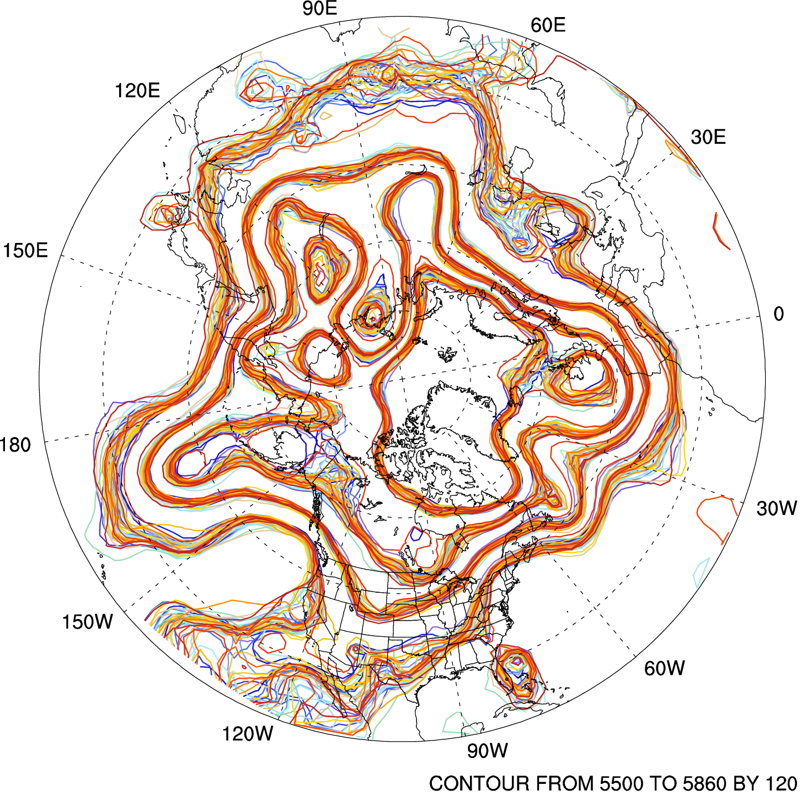

MPAS Data Assimilation |
| Overview Data assimilation for MPAS is available as an ensemble Kalman filter (EnKF) implemented through Data Assimilation Research Testbed (DART). This work is done in a collaborative effort between the Mesoscale and Microscale Meteorology (MMM) Division and the DART development team in the Institute for Mathematics Applied to Geosciences (IMAGe) in the National Center for Atmospheric Research (NCAR). The latest official release of DART (the "Manhattan" version) includes interfaces for both MPAS-Atmosphere and MPAS-Ocean. To download the code, click here or email dart at ucar dot edu. In collaboration with NOAA's Earth System Research Laboratory, related efforts are also underway to explore ensemble data assimilation for MPAS-Atmosphere with the Gridpoint Statistical Interpolation (GSI) scheme that is operational at the National Centers for Environmental Prediction. Further collaborations related to MPAS data assimilation are welcome (see contact information below). |
 Spaghetti diagram of the ensemble analysis in terms of geopotential height at 500 mb valid at 12Z 5 Dec 2008. |
| The MPAS/DART interface The interface is built on MPAS's unstructured centroidal Voronoi mesh, and does not regrid to latitude-longitude grids. In MPAS, the finite-volume approach based on a C-grid staggering retains prognostic equations for mass at the center of finite-volume cells and for the normal component of velocity (u) at the faces (or edges in 2D) of the cells. The normal component of velocity (u) at cell edges is then used to reconstruct zonal and meridional winds at cell centers () using radial basis functions (RBFs). To avoid the singularity issue on the poles, the cartesian coordinate is employed.
The forward operators on the unstructured grid mesh are constructed as follows. | Grid structure used in the MPAS/DART interface |
| Contact For any questions or future collaboration, please contact either Soyoung Ha (syha@ucar.edu) or the DART team (dart@ucar.edu). |